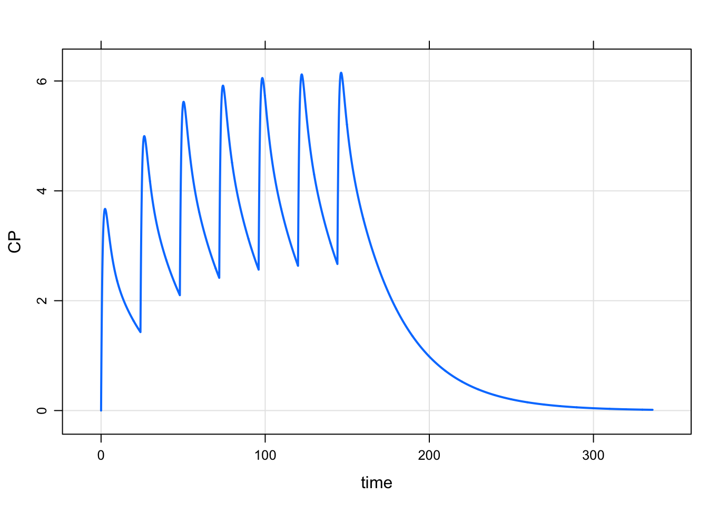
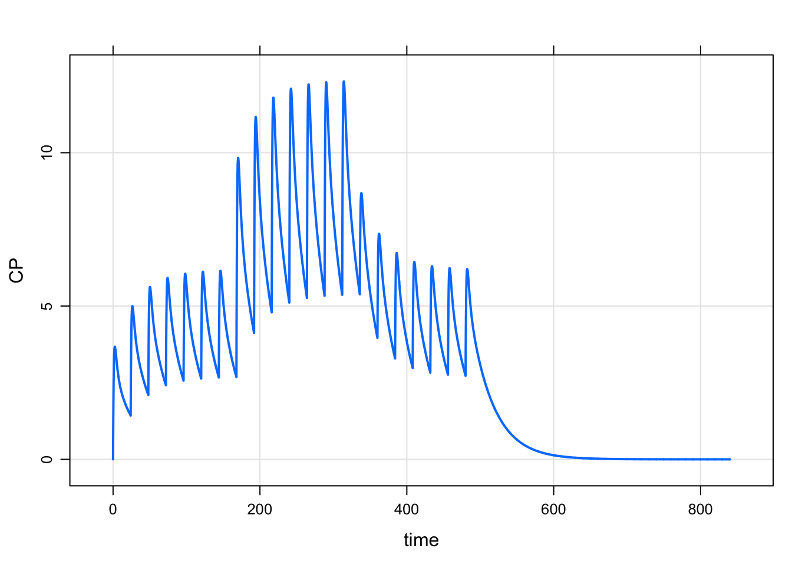
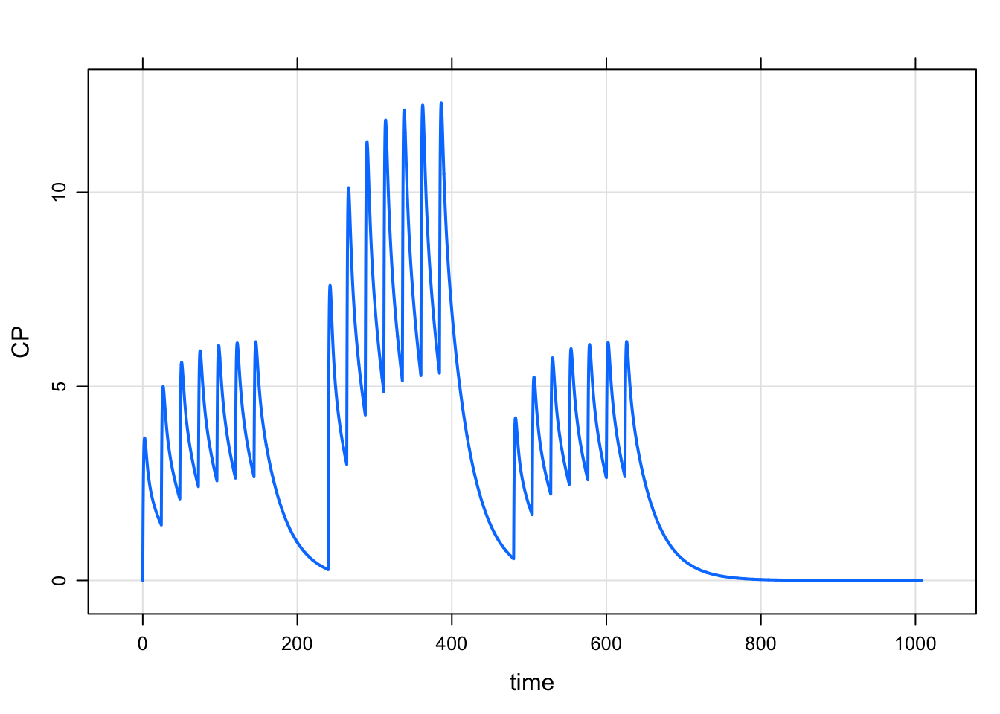
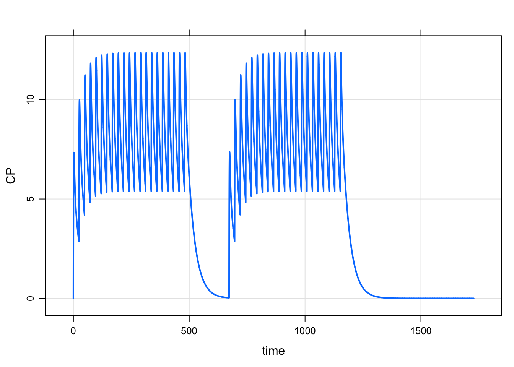
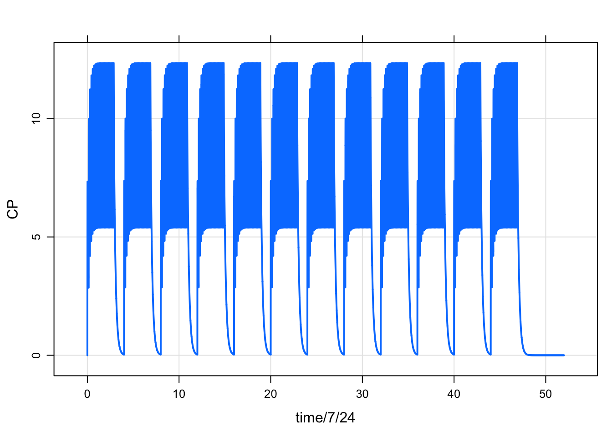
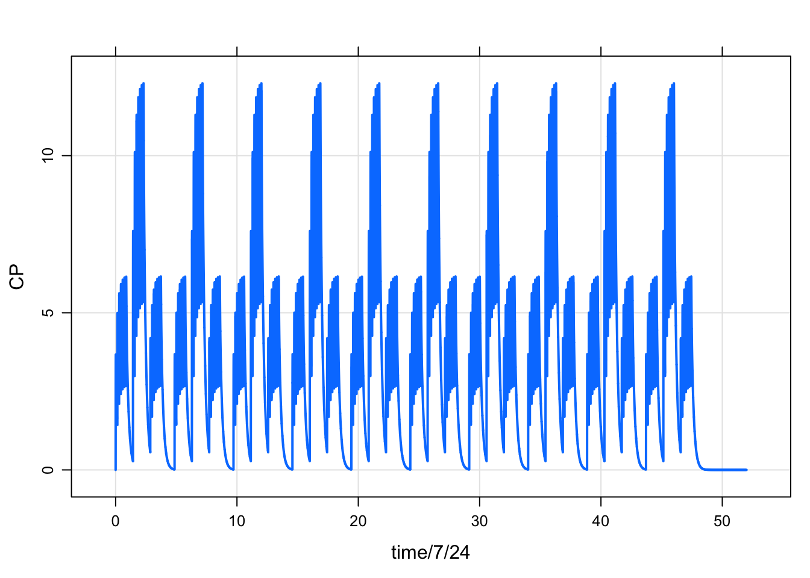
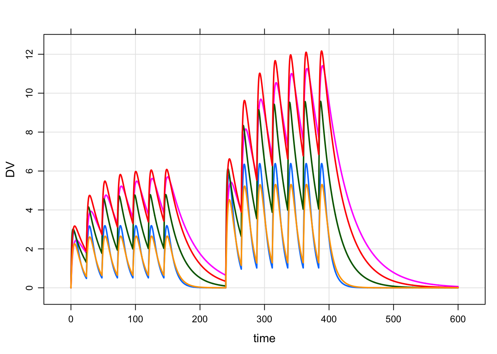

With this blog post, we’d like to introduce some new functions in mrgsolve that work with event objects. The focus for this functionality is creating complicated dosing regimens from simpler, elementary event objects. And in particular, we’ll see in this blog post how to easily create regular/irregular dosing patterns.
Let’s get started
library(dplyr)
library(mrgsolve)
mod <- mread_cache("pk2cmt", modlib()) %>% update(delta = 0.1) %>% Req(CP)Recall that event objects are our way of creating simple dosing interventions. They are created with the ev function and they look like a single dosing row from a data set.
For example, we can have 100 mg daily dosing over a week like this
e1 <- ev(amt = 100, ii = 24, addl = 6)
e1. Events:
. time cmt amt evid ii addl
. 1 0 1 100 1 24 6mod %>% mrgsim(events = e1, end = 2*168) %>% plot
Now, let’s imagine a alternating dosing sequence of 100 mg daily for a week, then 200 mg daily for a week etc. We can schedule this with a sequence of event objects.
First, make the 200 mg event object
e2 <- ev(amt = 200, ii = 24, addl = 6)Then, schedule them in a sequence
e3 <- seq(e1, e2, e1)
e3. Events:
. time cmt amt evid ii addl
. 1 0 1 100 1 24 6
. 2 168 1 200 1 24 6
. 3 336 1 100 1 24 6When we create a sequence of event objects, mrgsolve calculates when each event is finished and automatically times each event according to the end time from the preceeding event. Notice that each event starts one dosing interval after the last dose of the previous event.
And try that out
mod %>% mrgsim(events = e3, end = 5*168) %>% plot
wait in event sequenceWhat if we want a 3-day holiday between each treatment period? Simply schedule a waiting period in the sequence:
e4 <- seq(e1, wait = 72, e2, wait = 72, e1)
e4. Events:
. time cmt amt evid ii addl
. 1 0 1 100 1 24 6
. 2 240 1 200 1 24 6
. 3 480 1 100 1 24 6Notice that the event objects (e1 and e2) are unnamed arguments. But wait is a named argument with a single numeric value. Introducing a wait period in the sequence pushes the start of the next period in the sequence forward in time.
mod %>% mrgsim(events = e4, end = 6*168) %>% plot
To code a cycle of 3 weeks on, one week off for two months
e5 <- ev(amt = 200, ii = 24, addl = 20)
e6 <- seq(e5, wait = 168, e5)
mod %>% mrgsim(events = e6, end = 72*24) %>% plot
Coding the 3 weeks on / 1 week off regimen for 2 months wasn’t too bad, but it might get tedious if we need to do it for a year.
To make that simpler we can repeat the basic regimen as many times as we’d like with ev_rep
e7 <- ev_rep(e5, n = 12, wait = 168)
mod %>% mrgsim(data = e7, end = 52*168) %>% plot(CP~time/7/24)
In ev_rep, there is a single waiting period in between replicates of the 3 week on period.
Alternatively, we could work with the 100/200/100 sequence like this
e4. Events:
. time cmt amt evid ii addl
. 1 0 1 100 1 24 6
. 2 240 1 200 1 24 6
. 3 480 1 100 1 24 6e8 <- ev_rep(e4, n = 10, wait = 168)
mod %>% mrgsim(data = e8, end = 52*168) %>% plot(CP~time/7/24)
So far we have been dealing with a single ID in the event object or data set. The ev_rep function can easily expand that event in to several IDs
e9 <- seq(e1, wait = 72, e2)
e9 <- ev_rep(e9, ID = 1:5)
e9. time cmt amt evid ii addl ID
. 1 0 1 100 1 24 6 1
. 2 240 1 200 1 24 6 1
. 3 0 1 100 1 24 6 2
. 4 240 1 200 1 24 6 2
. 5 0 1 100 1 24 6 3
. 6 240 1 200 1 24 6 3
. 7 0 1 100 1 24 6 4
. 8 240 1 200 1 24 6 4
. 9 0 1 100 1 24 6 5
. 10 240 1 200 1 24 6 5Now we have 5 patients each getting 100 mg daily for one week and then 200 mg daily for a week after a 3 day break.
mod <- mread_cache("popex", modlib()) %>% update(delta=0.1)
mod %>% mrgsim(data = e9, end = 600) %>% plot(DV~.) # Environment
. ─ Session info ──────────────────────────────────────────────────────────
. setting value
. version R version 3.5.2 (2018-12-20)
. os macOS Sierra 10.12.6
. system x86_64, darwin15.6.0
. ui X11
. language (EN)
. collate en_US.UTF-8
. ctype en_US.UTF-8
. tz America/Chicago
. date 2019-01-09
.
. ─ Packages ──────────────────────────────────────────────────────────────
. package * version date lib source
. assertthat 0.2.0 2017-04-11 [1] CRAN (R 3.5.0)
. backports 1.1.3 2018-12-14 [1] CRAN (R 3.5.0)
. bindr 0.1.1 2018-03-13 [1] CRAN (R 3.5.0)
. bindrcpp * 0.2.2 2018-03-29 [1] CRAN (R 3.5.0)
. callr 3.1.1 2018-12-21 [1] CRAN (R 3.5.0)
. cli 1.0.1 2018-09-25 [1] CRAN (R 3.5.0)
. codetools 0.2-16 2018-12-24 [2] CRAN (R 3.5.2)
. colorspace 1.3-2 2016-12-14 [1] CRAN (R 3.5.0)
. crayon 1.3.4 2017-09-16 [1] CRAN (R 3.5.0)
. desc 1.2.0 2018-05-01 [1] CRAN (R 3.5.0)
. devtools 2.0.1 2018-10-26 [1] CRAN (R 3.5.2)
. digest 0.6.18 2018-10-10 [1] CRAN (R 3.5.0)
. dmutate * 0.1.2 2017-08-28 [1] CRAN (R 3.5.0)
. dplyr * 0.7.8 2018-11-10 [1] CRAN (R 3.5.0)
. evaluate 0.12 2018-10-09 [1] CRAN (R 3.5.0)
. fansi 0.4.0 2018-10-05 [1] CRAN (R 3.5.0)
. fs 1.2.6 2018-08-23 [1] CRAN (R 3.5.0)
. ggplot2 * 3.1.0 2018-10-25 [1] CRAN (R 3.5.0)
. glue 1.3.0 2018-07-17 [1] CRAN (R 3.5.0)
. gtable 0.2.0 2016-02-26 [1] CRAN (R 3.5.0)
. htmltools 0.3.6 2017-04-28 [1] CRAN (R 3.5.0)
. knitr * 1.21 2018-12-10 [1] CRAN (R 3.5.2)
. labeling 0.3 2014-08-23 [1] CRAN (R 3.5.0)
. lattice 0.20-38 2018-11-04 [2] CRAN (R 3.5.2)
. lazyeval 0.2.1 2017-10-29 [1] CRAN (R 3.5.0)
. magrittr * 1.5 2014-11-22 [1] CRAN (R 3.5.0)
. MASS 7.3-51.1 2018-11-01 [2] CRAN (R 3.5.2)
. memoise 1.1.0 2017-04-21 [1] CRAN (R 3.5.0)
. minqa * 1.2.4 2014-10-09 [1] CRAN (R 3.5.0)
. mrgsolve * 0.8.12.9000 2019-01-09 [1] local
. munsell 0.5.0 2018-06-12 [1] CRAN (R 3.5.0)
. pillar 1.3.1 2018-12-15 [1] CRAN (R 3.5.0)
. pkgbuild 1.0.2 2018-10-16 [1] CRAN (R 3.5.0)
. pkgconfig 2.0.2 2018-08-16 [1] CRAN (R 3.5.0)
. pkgload 1.0.2 2018-10-29 [1] CRAN (R 3.5.0)
. plyr 1.8.4 2016-06-08 [1] CRAN (R 3.5.0)
. prettyunits 1.0.2 2015-07-13 [1] CRAN (R 3.5.0)
. processx 3.2.1 2018-12-05 [1] CRAN (R 3.5.0)
. ps 1.3.0 2018-12-21 [1] CRAN (R 3.5.0)
. purrr * 0.2.5 2018-05-29 [1] CRAN (R 3.5.0)
. R6 2.3.0 2018-10-04 [1] CRAN (R 3.5.0)
. RColorBrewer 1.1-2 2014-12-07 [1] CRAN (R 3.5.0)
. Rcpp 1.0.0 2018-11-07 [1] CRAN (R 3.5.0)
. RcppArmadillo 0.9.200.5.0 2018-11-28 [1] CRAN (R 3.5.0)
. remotes 2.0.2 2018-10-30 [1] CRAN (R 3.5.0)
. rlang 0.3.1 2019-01-08 [1] CRAN (R 3.5.2)
. rmarkdown 1.11 2018-12-08 [1] CRAN (R 3.5.0)
. rprojroot 1.3-2 2018-01-03 [1] CRAN (R 3.5.0)
. scales 1.0.0 2018-08-09 [1] CRAN (R 3.5.0)
. sessioninfo 1.1.1 2018-11-05 [1] CRAN (R 3.5.0)
. stringi 1.2.4 2018-07-20 [1] CRAN (R 3.5.0)
. stringr 1.3.1 2018-05-10 [1] CRAN (R 3.5.0)
. sys 2.1 2018-11-13 [1] CRAN (R 3.5.0)
. testthat 2.0.1 2018-10-13 [1] CRAN (R 3.5.0)
. tibble 2.0.0 2019-01-04 [1] CRAN (R 3.5.2)
. tidyselect 0.2.5 2018-10-11 [1] CRAN (R 3.5.0)
. usethis 1.4.0 2018-08-14 [1] CRAN (R 3.5.0)
. utf8 1.1.4 2018-05-24 [1] CRAN (R 3.5.0)
. withr 2.1.2 2018-03-15 [1] CRAN (R 3.5.0)
. xfun 0.4 2018-10-23 [1] CRAN (R 3.5.0)
. yaml 2.2.0 2018-07-25 [1] CRAN (R 3.5.0)
.
. [1] /Users/kyleb/Rlibs
. [2] /Library/Frameworks/R.framework/Versions/3.5/Resources/library